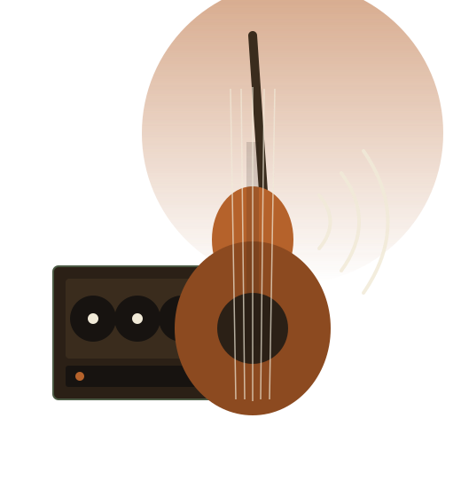

Cuerdas y cuerpo
Guitarras acústicas, eléctricas, bajos y accesorios de las marcas que ya conoces: Yamaha, Fender, Epiphone, Squier.
Ver guitarras y bajos →Hace 11 años equipamos a músicos de Viña del Mar y la Región de Valparaíso. Hoy llevamos el mismo mesón de siempre a internet: catálogo completo, pedidos formales y seguimiento, sin depender de un WhatsApp que nadie alcanza a responder.

Guitarras, bajos, baterías, teclados, amplificadores, micrófonos, pedales de efectos y accesorios, además de reparación de instrumentos de cuerda.
Guitarras acústicas, eléctricas, bajos y accesorios de las marcas que ya conoces: Yamaha, Fender, Epiphone, Squier.
Ver guitarras y bajos →Baterías acústicas y electrónicas, teclados digitales y controladores MIDI para grabar o tocar en vivo.
Ver baterías y teclados →Amplificadores, micrófonos, pedales de efectos e interfaces de audio para grabar desde casa.
Ver equipos de sonido →Si vives fuera de Viña del Mar, ya no necesitas escribir por Instagram y esperar horas por una respuesta. Revisa el catálogo actualizado, agrega productos al carrito y elige si prefieres que te lo despachemos o pasar a retirarlo tú mismo.
Recorrido breve por la tienda física de Viña del Mar. (Reemplazar con el video grabado por el equipo antes de la entrega final.)
Atendemos de forma presencial y también coordinamos retiros para pedidos hechos por el sitio.